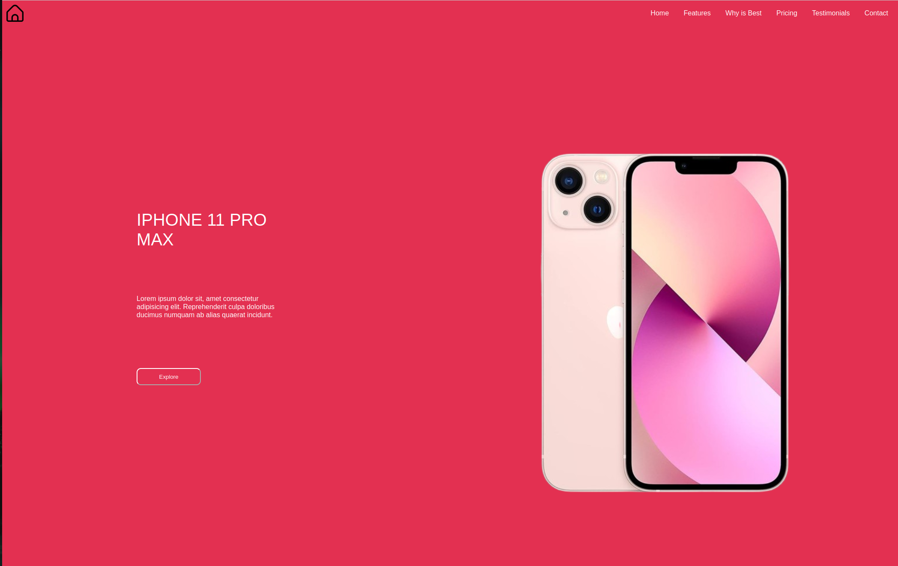
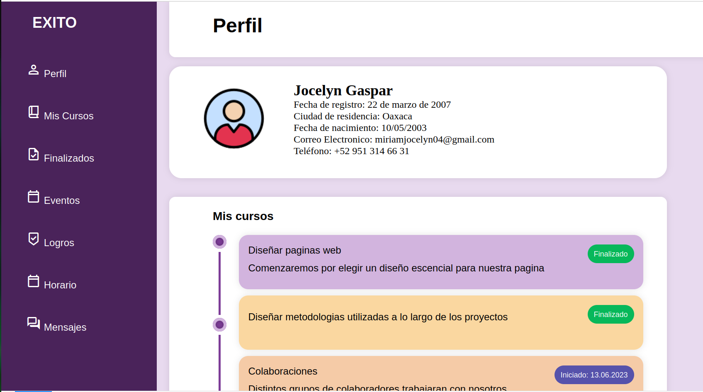

Portafolio de EVidencias Programacion Web
Sistema Solar
Este proyecto consiste en una página web que
explora los planetas del sistema solar. Cada sección presenta
información detallada sobre las características y curiosidades de cada
planeta. Utilizando HTML se ha diseñado una interfaz que permite a los
usuarios navegar fácilmente a través de los diferentes cuerpos celestes,
complementada con imágenes. La página busca educar y fascinar a los
visitantes sobre nuestro sistema solar.

Iphone 10
Esta página está diseñada para ofrecer una
presentación atractiva y concisa del iPhone 10. Con un diseño limpio y
moderno, la estructura incluye un encabezado llamativo que destaca el
modelo, seguido de una descripción detallada de sus características más
relevantes.

Login
Este proyecto contiene un formato para login, los estilos son un poco más complejos.

Dashboard
Se elaboró un diseño sobre la página de perfil, en la que se muestran varias divisiones.
